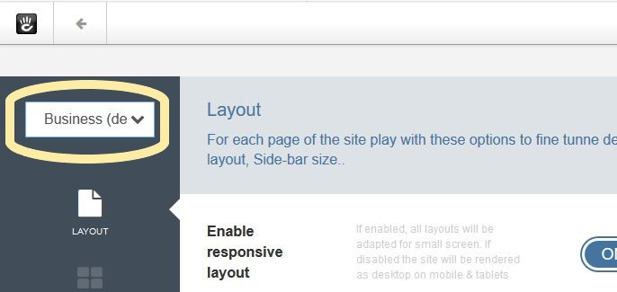

Presets¶
In the Dashboard under “Supermint options” there are three choices,
- Theme options
- Sliders
- Fonts
each with its own options page that has a preset dropdown selector. All options are saved in the database, grouped into presets. Each preset therefore contains general options of the theme, the sliders and fonts. The other two choices
- Site settings
- Presets
do not have a preset dropdown selector on the page.
Presets selector¶
The choice of presets available is displayed on the top left, in each page of options. When you save a page of options, they will only be saved in the preset THAT is displayed on the top left.

Manage Presets¶
On the Theme presets page, you can set as default, add, delete, rename, export, and import presets.
Apply presets to whole site¶
To set a preset for the whole site, go to the Dashboard->Supermint Options->Presets page, then in the “Manage presets” section click on the button “Set as Default”.
Apply presets to pages¶
Sometimes we need a site that has some pages with a different appearance. For this we can create different preset, set one for the whole site and apply another to certain pages.
Overview
To apply a preset on a page only, go to the Customize theme page and set the attribute Preset Option.Details
- Exit edit mode (go back to site) by clicking on the pencil in the editing toolbar.
- Goto the page that needs editing.
- Click on the gear in the editing toolbar upper left.
- Follow concrete5 page edit drop down documentation. Click on the “Design” selection
- Under the Theme box, click on “Customize” in the theme icon.
- Pick one of the presets radio buttons.
- Click on the “Save” button
- Click on the “This page” button
Original reference: web.archive.org page